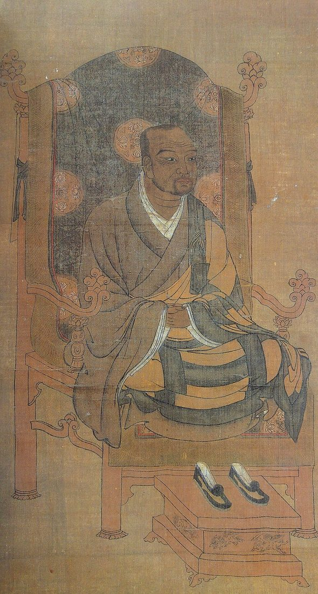

신라 진평왕 때 태어나, 벗 의상과 함께 불교를 더 배우러 당나라 유학길에 올랐어요. 그런데 도중에 잠결에 마신 물이 다음 날 보니 해골에 고인 물이었음을 알고 — ‘모든 것은 마음이 지어낸다(一切唯心造)’는 큰 깨달음을 얻어, 유학을 그만두고 발길을 돌렸다고 전해져요(깨달음의 핵심을 담아 널리 전하는 이야기).
그는 종파 사이의 다툼을 더 큰 하나로 아우르는 ‘화쟁(和諍)’ 사상을 폈고, 《대승기신론소》 등 수많은 저술로 동아시아 불교 전체에 큰 영향을 줬어요. 동시에 어려운 교리 대신 ‘나무아미타불’만 외우면 누구나 구원받을 수 있다는 정토 신앙을 백성 사이에 퍼뜨려 — 불교를 귀족의 것에서 ‘모두의 것’으로 넓혔죠. 그는 요석공주와의 사이에서 훗날 이두를 정리한 학자 설총을 낳고, 스스로 승복을 벗어 ‘소성거사’로 저잣거리를 누비기도 했어요.